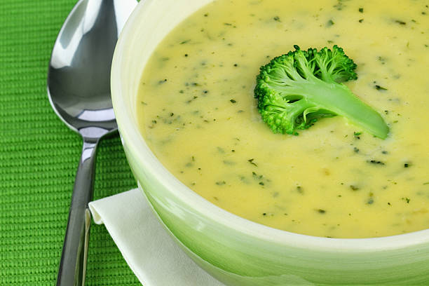

Brokoli çorbası lezzet açısından damakta dolgun bir tat bırakır. Hem tadı hem sunumuyla göze de hitap eder. Bu yüzden en ağır misafir sofralarından, her gün oturulan öğlen ve akşam yemeklerine kadar hemen hemen her sofrada tercih ve servis edilir.
Ve işte çok seveceğiniz tarifi sizler için hazır...

Brokoli Çorbası
Malzemeler
- 500 gr brokoli
- 1 adet orta boy soğan
- 1 adet orta boy havuç
- 1 adet orta boy patates
- 2 su bardapı süt
- 2 yemek kaşığı tereyağı
- 1 yemek kaşıpı un
- Tuz
- Karabiber
Nasıl yapılır?
- Yarım kilo brokoliyi temizleyip, küçük küçük dallarına ayırın.
- Soğan, havuç ve patetesin kabuğunu soyup, küçük küçük doğrayın.
- Derin bir tencere içine doğradığınız bütün sebzeleri koyun.
- sebzelerin üzerlerini geçecek kadar su döküp, ocak üzerine koyun.
- Sebzeler yumuşayana kadar haşlayın. Haşlama suyunu dökmeyin çorba içinde kullanılacak.
- Diğer tarafta başka derin bir tencere içine 2 yemek kaşığı tereyağı koyup ertitin.
- Üzerine 1 yemek kaşığı un ekleyin, 1 dk kadar kavurun.
- Kavrulan unun üzerine 2 su bardağı sütü azar azar dökün. sürekli karıştırarak pişirin.
- Daha sonra haşladığınız sebzeleri sütlü karışımın içine alın. Son olarak üzerlerine 2 buçuk su bardağı haşlama suyundan dökün.
- Çorbayı blender ile iice ezin, damak tadınıza göre tuz ve karabiber koyup karıştırın.
- 1-2 taşım kaynatıp, ocağın altını kapatın.
- İsteğe göre çorbanın içine az miktarda sıvı krema ekleyebilirsiniz.
İŞTE PÜF NOKTALAR!!!
- Seçilen brokoli çok önemlidir. Koyu yeşil renkte olmasına özen gösterilmelidir.
AFİYET OLSUN